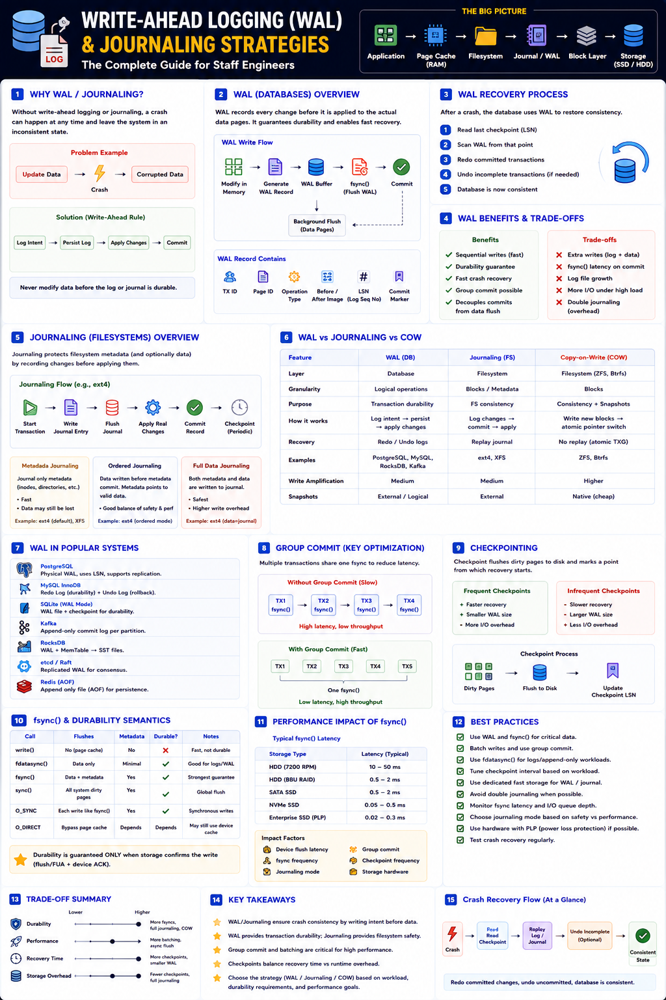

WAL, redo/undo logs, checkpoints, group commit — Staff Engineer level
The Big Picture
Never modify data before the log becomes durable. WAL records intent first, then applies the change — enabling crash recovery, ACID durability, and high-throughput sequential I/O.
WAL Architecture & Write Path
The actual database page may be written much later. The WAL guarantees recovery if a crash happens before the data page is flushed.
WAL Record Contents & Lifecycle
Each WAL record contains
Why WAL is fast
Sequential append vs random page writes:
Crash Recovery via WAL
| Log Type | Purpose |
|---|---|
| Redo Log | Reapply committed changes after crash |
| Undo Log | Roll back incomplete/aborted transactions |
| WAL | Stores redo (and often undo) in a single sequential log |
Checkpoints
Dirty pages live in memory; a checkpoint flushes them to disk. Recovery replays WAL only from the last checkpoint.
Frequent checkpoints
Infrequent checkpoints
Tune checkpoint_completion_target and max_wal_size in PostgreSQL based on RTO requirements.
Group Commit — Key Throughput Optimization
Without group commit
With group commit
PostgreSQL, MySQL InnoDB, Kafka, and RocksDB all use group commit to achieve high TPS with durability.
Filesystem Journaling Strategies
1. Metadata Journaling (ext4 default, XFS)
Only inode, directory, and permission changes are journaled. File data is not. Fast, but data may be lost on crash.
2. Ordered Journaling (ext4 ordered mode)
Data written to disk before metadata is committed. Metadata never references unwritten data. Best default balance.
3. Full Data Journaling (ext4 journal mode)
Both data and metadata are journaled. Safest, but doubles write traffic.
4. Copy-on-Write (ZFS, Btrfs)
No journal replay needed. New blocks written, pointer atomically switched. Crash-consistent by design.
WAL vs Journaling vs Copy-on-Write
| Feature | WAL | Journaling | COW |
|---|---|---|---|
| Layer | Database | Filesystem | Filesystem |
| Granularity | Logical ops | Block/metadata | Block |
| In-place update | Later | Yes | No |
| Crash recovery | Replay redo/undo | Replay journal | Atomic pointer swap |
| Snapshots | External | External | Native ⭐ |
| Write amplification | Medium | Medium | Higher |
| Examples | PostgreSQL, MySQL | ext4, XFS | ZFS, Btrfs |
WAL in Popular Systems
| System | WAL Strategy |
|---|---|
| PostgreSQL | Physical WAL + fdatasync() + group commit + checkpoints |
| MySQL InnoDB | Redo Log + Undo Log + Double Write Buffer |
| SQLite | WAL mode (readers don't block writers) |
| Kafka | Append-only commit log per partition |
| RocksDB | WAL + MemTable → SSTable compaction |
| Redis | AOF (Append Only File) — configurable fsync |
| etcd / Raft | Replicated WAL — log is consensus |
| ZFS | ZIL (intent log) + TXG + COW |
Performance vs Durability Trade-offs
| Strategy | Performance | Durability |
|---|---|---|
| Async WAL flush | ⭐⭐⭐⭐⭐ | ⭐⭐ (some loss) |
| WAL + Group Commit | ⭐⭐⭐⭐ | ⭐⭐⭐⭐ |
| WAL + fsync every commit | ⭐⭐ | ⭐⭐⭐⭐⭐ |
| Metadata journaling | ⭐⭐⭐⭐ | ⭐⭐⭐ |
| Full data journaling | ⭐⭐ | ⭐⭐⭐⭐⭐ |
| Copy-on-Write | ⭐⭐⭐ | ⭐⭐⭐⭐⭐ |
Staff Engineer Thinking
Junior
What is WAL?
Senior
Why is WAL faster than direct writes?
Staff asks
fsync()?Production Failure Scenarios
Lost Transactions After Crash
Cause: Async WAL flush · Fix: Enable synchronous commit for critical data
Huge WAL Files Consuming Disk
Cause: Checkpoint too infrequent · Fix: Tune checkpoint interval and max_wal_size
High Commit Latency
Cause: One fsync() per transaction · Fix: Enable group commit
Double Write Overhead
Cause: DB WAL + full filesystem journaling on same data · Fix: Use ordered metadata journaling or O_DIRECT for WAL path
Slow Crash Recovery
Cause: Large WAL replay from distant checkpoint · Fix: Increase checkpoint frequency
Staff Engineer Decision Framework
| Requirement | Best Strategy |
|---|---|
| Financial / banking transactions | WAL + fsync() every commit + PLP SSD |
| OLTP databases (PostgreSQL) | WAL + group commit + tuned checkpoints |
| Logging / event systems | Async WAL (some loss acceptable) |
| General Linux filesystem | Ordered journaling (ext4 default) |
| Enterprise NAS / storage | Copy-on-Write (ZFS) |
| Maximum integrity + snapshots | WAL + PLP SSD + frequent checkpoints + ZFS |
Production Debugging Checklist
pg_stat_bgwriter)fsync() latency: fio --fsync=1Key Takeaways
